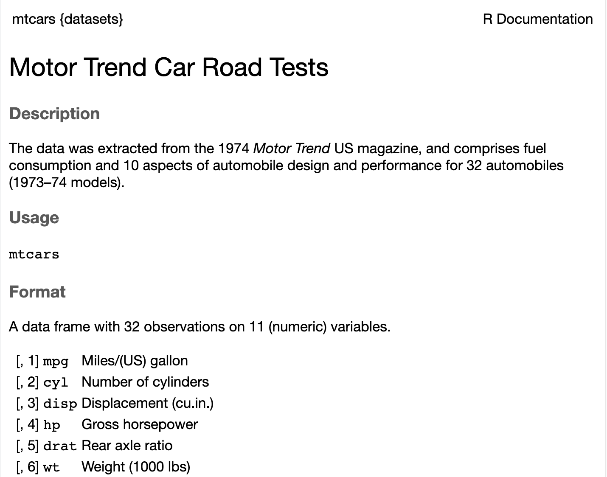

# create one
travellers <- data.frame(
name = c("Arthur", "Ford", "Trillian", "Zaphod"),
planet = c("Earth", "Betelgeuse", "Earth", "Betelgeuse"),
age = c(30, 200, 30, NA),
towels = c(1, 2, 1, 0),
knows_answer = c(NA, TRUE, TRUE, FALSE))Data frames
A data frame is a rectangular collection of vectors of equal length. Each column is a vector (a variable). Each row is an observation. Different columns can contain different types of data.
travellers name planet age towels knows_answer
1 Arthur Earth 30 1 NA
2 Ford Betelgeuse 200 2 TRUE
3 Trillian Earth 30 1 TRUE
4 Zaphod Betelgeuse NA 0 FALSE# look at the top rows
head(travellers, 2) name planet age towels knows_answer
1 Arthur Earth 30 1 NA
2 Ford Betelgeuse 200 2 TRUE# look at the bottom rows
tail(travellers, 2) name planet age towels knows_answer
3 Trillian Earth 30 1 TRUE
4 Zaphod Betelgeuse NA 0 FALSEnames(travellers)[1] "name" "planet" "age" "towels" "knows_answer"Inspect its structure
class(travellers$name) [1] "character"class(travellers$age) [1] "numeric"nrow(travellers)[1] 4ncol(travellers)[1] 5length(travellers$name) [1] 4length(travellers$age)[1] 4dim(travellers)[1] 4 5## easier
str(travellers)'data.frame': 4 obs. of 5 variables:
$ name : chr "Arthur" "Ford" "Trillian" "Zaphod"
$ planet : chr "Earth" "Betelgeuse" "Earth" "Betelgeuse"
$ age : num 30 200 30 NA
$ towels : num 1 2 1 0
$ knows_answer: logi NA TRUE TRUE FALSEsummary(travellers) name planet age towels
Length:4 Length:4 Min. : 30.00 Min. :0.00
Class :character Class :character 1st Qu.: 30.00 1st Qu.:0.75
Mode :character Mode :character Median : 30.00 Median :1.00
Mean : 86.67 Mean :1.00
3rd Qu.:115.00 3rd Qu.:1.25
Max. :200.00 Max. :2.00
NA's :1
knows_answer
Mode :logical
FALSE:1
TRUE :2
NA's :1
Selecting rows and columns
#using [ ]
# row columns
travellers[3:4 , c(1, 3)] name age
3 Trillian 30
4 Zaphod NA# get one column using $ and the name of the column
travellers$age[1] 30 200 30 NAtravellers[ , c("name", "age")] name age
1 Arthur 30
2 Ford 200
3 Trillian 30
4 Zaphod NABuilt-In Datasets
R comes with several built-in datasets that are useful for learning. Other packages can also provide their own example datasets (see int.link).
dataset_catalog <- data()
head(dataset_catalog$results[, "Item"], 10) [1] "AirPassengers" "BJsales" "BJsales.lead (BJsales)"
[4] "BOD" "CO2" "ChickWeight"
[7] "DNase" "EuStockMarkets" "Formaldehyde"
[10] "HairEyeColor" Popular example mtcars Get information about dataset: ?mtcars

head(mtcars) mpg cyl disp hp drat wt qsec vs am gear carb
Mazda RX4 21.0 6 160 110 3.90 2.620 16.46 0 1 4 4
Mazda RX4 Wag 21.0 6 160 110 3.90 2.875 17.02 0 1 4 4
Datsun 710 22.8 4 108 93 3.85 2.320 18.61 1 1 4 1
Hornet 4 Drive 21.4 6 258 110 3.08 3.215 19.44 1 0 3 1
Hornet Sportabout 18.7 8 360 175 3.15 3.440 17.02 0 0 3 2
Valiant 18.1 6 225 105 2.76 3.460 20.22 1 0 3 1str(mtcars)'data.frame': 32 obs. of 11 variables:
$ mpg : num 21 21 22.8 21.4 18.7 18.1 14.3 24.4 22.8 19.2 ...
$ cyl : num 6 6 4 6 8 6 8 4 4 6 ...
$ disp: num 160 160 108 258 360 ...
$ hp : num 110 110 93 110 175 105 245 62 95 123 ...
$ drat: num 3.9 3.9 3.85 3.08 3.15 2.76 3.21 3.69 3.92 3.92 ...
$ wt : num 2.62 2.88 2.32 3.21 3.44 ...
$ qsec: num 16.5 17 18.6 19.4 17 ...
$ vs : num 0 0 1 1 0 1 0 1 1 1 ...
$ am : num 1 1 1 0 0 0 0 0 0 0 ...
$ gear: num 4 4 4 3 3 3 3 4 4 4 ...
$ carb: num 4 4 1 1 2 1 4 2 2 4 ...summary(mtcars[, 1:3]) mpg cyl disp
Min. :10.40 Min. :4.000 Min. : 71.1
1st Qu.:15.43 1st Qu.:4.000 1st Qu.:120.8
Median :19.20 Median :6.000 Median :196.3
Mean :20.09 Mean :6.188 Mean :230.7
3rd Qu.:22.80 3rd Qu.:8.000 3rd Qu.:326.0
Max. :33.90 Max. :8.000 Max. :472.0 Read in a dataframe
data <- readRDS("data/PlannedEnv_4countries.rds")
data <- read.csv("data/voodoo.csv")what is the problem with the way I have named the data frames?
Note
When you read or save a file, R needs to know where to look for it. The folder R is currently using is called the working directory.
You can check it with:
getwd()[1] "/Users/nleach/Library/CloudStorage/OneDrive-TUEindhoven/Teaching/another-intro-r"Rather than repeatedly changing the working directory with setwd(), it is better to work inside an RStudio project and use relative file paths.
Tip: Session > Set Working Directory > To File Source Location